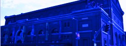
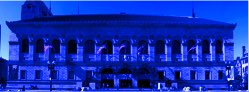
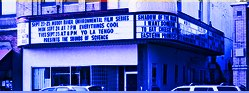

Events
$15
Boston's Unscripted Musical Project
Catalyst Comedy by Ministry of Theater
Friday, November 20, 2015 at 8:00 PM (EST)
Boston, MA
$35
Boston Early Music Festival
WGBH
Tuesday, November 24, 2015 from 7:00 PM to 9:00 PM (EST)
Boston, MA
Free
Talk About Dance: Cultural & Spiritual Traditions in Dance
Dance for World Community and José Mateo Ballet Theatre
Tuesday, December 1, 2015 from 6:00 PM to 8:00 PM (EST)
Boston, MA
$12
Family Design Day @ BSA Space: Gingerbread Editiont
LBD@BSA Space
Saturday, December 12, 2015 from 10:30 AM to 12:30 PM
Boston, MA
Visit
Museum of Fine Arts
465 Huntington Ave, Boston, MA 02115

Symphony Hall
301 Massachusetts Ave, Boston, MA 02115
Institute of Contemporary Art
100 Northern Ave, Boston, MA 02210

Boston Public Library
700 Boylston St, Boston, MA 02116
Isabella Stewart Gardner Museum
25 Evans Way, Boston, MA 02115

Coolidge Corner Theatre
290 Harvard St, Brookline, MA 02446